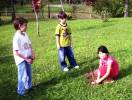

Nome: Teresinha Dalla Rosa
Nome: Maria Conceição Borba
Telefone: (47) 3365-3387
E-mail: fredericodallarosa@yahoo.com.br
"Se a educação não for ambiental, então, não é educação".
(MAURO GRÜN, 1996)
"Se a educação não for ambiental, então, não é educação".
(MAURO GRÜN, 1996)
Turismo, Sustentabilidade e Educação Infantil
A temática socioambiental é abordada a todo o momento no ambiente escolar, se entendermos que as questões relativas ao meio ambiente, devem ser representadas como o conjunto de fatores ecológicos e sociais (preservação de recursos, cuidado e respeito com outras espécies animais, solidariedade, etc).
É também a proposta do Projeto sensibilizar os educandos quanto à importância da preservação do meio ambiente e do estabelecimento de relações mais harmônicas entre o homem e o meio do qual faz parte.
Conhecendo as características e qualidades do meio, as crianças são capazes de se sensibilizar para sua preservação, ou seja, só protegemos aquilo que amamos e valorizamos.


Está página não foi desevolvida para o Internet Explorer, por favor utilize outro navegador.

Clique aqui para fazer download do Firefox.

Clique aqui para fazer download do Google Chrome.
Em 2011, o projeto estendeu suas atividades junto aos CEIs (Centros de Educação Infantil).
O trabalho será realizado com os professores através de atividades teóricas e práticas (palestra e aula passeio).
Com esta metodologia de trabalho é possivel que os professores sejam os articuladores junto aos alunos, em função da faixa etária dos educandos, entendemos que a maneira mais adequada é que os professores sejam os multiplicadores.
Em 2011, o projeto estendeu suas atividades junto aos CEIs (Centros de Educação Infantil).
O trabalho será realizado com os professores através de atividades teóricas e práticas (palestra e aula passeio).
Com esta metodologia de trabalho é possivel que os professores sejam os articuladores junto aos alunos, em função da faixa etária dos educandos, entendemos que a maneira mais adequada é que os professores sejam os multiplicadores.
Obs. 01: Atenção diretor(a), com exceção do JI Padre Sergio Maykot que realizará as aulas passeio nos dias 30/06 matutino e 29/06 vespertino, todos os demais CEIs terão as aulas passeio em suas respectivas datas
Obs. 02: Senhor(a) diretor(a), não esqueça de levar o Datashow para a sua unidade de ensino um dia antes!
03/05/2011 - CEI Eurípides de Paula Silva
12/05/2011 - CEI Julita Pereira
17/05/2011 - CEI Maria Bittencourt Saut
19/05/2011 - CEI Maria Russi
31/05/2011 - CEI Menino Jesus
02/06/2011 - CE Abelardo Torquato Rosa
17/06/2011 - JI Padre Sergio Maykot
02/08/2011 - CEI CAIC
04/08/2011 - CEI Neide Merisio Molleri
09/08/2011 - CEI Odete Ramos Poltronieri
23/08/2011 - CEI Monte Alegre
27/09/2011 - CEI Rio do Meio
29/09/2011 - CEI Tânia Regina Garcia
18/10/2011 - CEI Judite da Rocha Dalago
26/10/2011 - CEI Otilia dos Santos da Silva